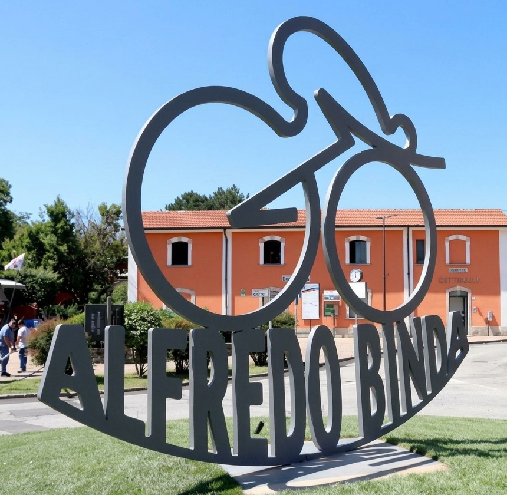

La storia di Alfredo Binda si incrocia con quella dell'arrampicata, seppur in modo metaforico: il ciclista varesino veniva infatti chiamato "Signore delle montagne" per la sua bravura nelle scalate alpine e dolomitiche, possibile grazie agli allenamenti sulle montagne di casa, dal Passo del Cuvignone al mitico Campo dei Fiori.
Indovina quali di queste curiosità su di lui sono vere e quali false:
Alfredo Binda's story crosses paths with climbing, if only metaphorically: the Varese cyclist was nicknamed "Lord of the Mountains" for his skill on Alpine and Dolomite climbs, made possible by training on his home mountains, from the Passo del Cuvignone to the legendary Campo dei Fiori.
Guess which of these facts about him are true and which are false:

Un anno fu pagato dagli organizzatori del Giro d'Italia per non partecipare al Giro.One year the Giro d'Italia organisers paid him not to take part in the race.
Vista la sua manifesta superiorità, nel 1930 gli organizzatori lo pagarono per non partecipare al Giro d'Italia: 22.500 lire, circa 27.000 € di oggi.He was so clearly superior that in 1930 the organisers paid him not to ride the Giro d'Italia: 22,500 lire, about €27,000 today.
Suonava la tromba nella banda del paese.He played the trumpet in the village band.
Alfredo Binda suonava davvero la tromba, tanto che i cronisti sportivi dell'epoca lo chiamavano spesso «il Trombettiere di Cittiglio».Alfredo Binda really did play the trumpet, so much so that sports reporters of the time often called him "the Trumpeter of Cittiglio".
Ha vissuto a Varese per tutta la vita.He lived in Varese all his life.
Falso: da giovanissimo si trasferì in Francia per lavoro, ed è lì che iniziò a gareggiare. Ma la sua vita resta legata a Cittiglio, dove ancora oggi si trova la sua casa di famiglia.False: as a teenager he moved to France for work, and that's where he started racing. But his life remains tied to Cittiglio, where his family home still stands today.
Portava sempre con sé un pettine, per non sfigurare nelle interviste di fine gara.He always carried a comb, so he'd look good in post-race interviews.
La celebre abitudine del pettine in tasca è di Hugo Koblet, che negli anni '50 fu soprannominato, non a caso, «le Pédaleur de charme».The famous comb-in-the-pocket habit belongs to Hugo Koblet, who in the 1950s was nicknamed, not by chance, "le Pédaleur de charme".
Ottimo lavoro! Ecco il prossimo indizio :)Great job! Here's your next clue :)
Indizio per la tappa 4Clue for stage 4
Lungo la strada verso il quarto indizio, se il tempo lo consente, togliti lo sfizio: alza gli occhi e guarda di fronte a te, un Campo dei Fiori più bello non c'è! Poi tira dritto, il passo non rallentare, fino al grande incrocio devi arrivare: su un cartello a bordo strada, un po' sbiadito, c'è scritto «Poliambulatorio»: il QR è lì, hai capito? 😉On your way to the fourth clue, if the sky is clear, here's a treat for you: look up ahead and you will see the Campo dei Fiori, as fine as can be! Then keep straight on, don't slow your pace, to the big crossroads, that's the place: on a roadside sign, a little faded, it says «Poliambulatorio»: you've made it! 😉